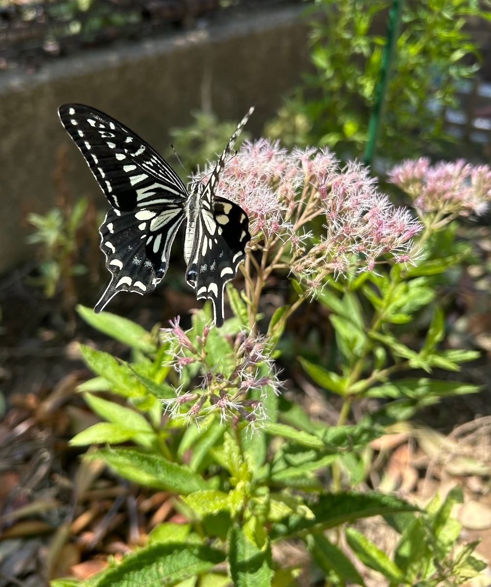

2025/08/30 アサギマダラの飛来を待つ庭に、ナミアゲハが毎日のように訪れます。
アサギマダラの飛来を期待する10月上旬はまだ先ですが、開花したベイビージョーにはナミアゲハが蜜を吸いに来ています。

2025/11/01 2025年 日本全国のアサギマダラの飛来情報
各地の飛来時期や頭数、諭鶴羽山を経由する南下ルートと世代交代について紹介します。
この記録を見る →0 件
アサギマダラ 2025年 生育記録
アサギマダラの飛来を期待する10月上旬はまだ先ですが、開花したベイビージョーにはナミアゲハが蜜を吸いに来ています。

各地の飛来時期や頭数、諭鶴羽山を経由する南下ルートと世代交代について紹介します。
この記録を見る →